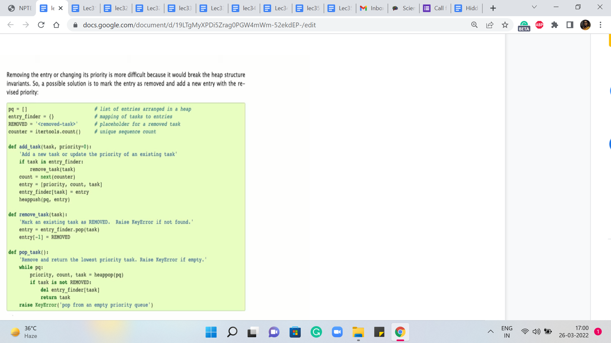
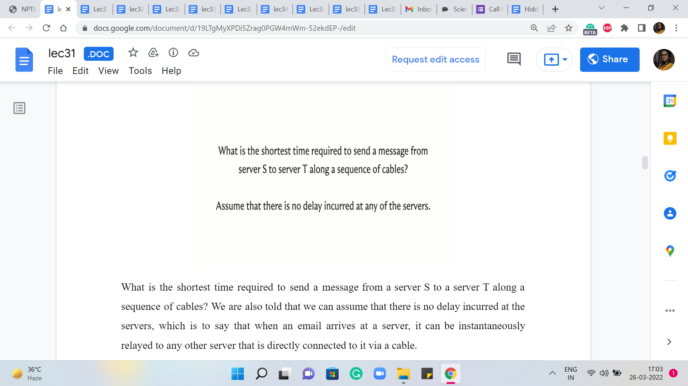
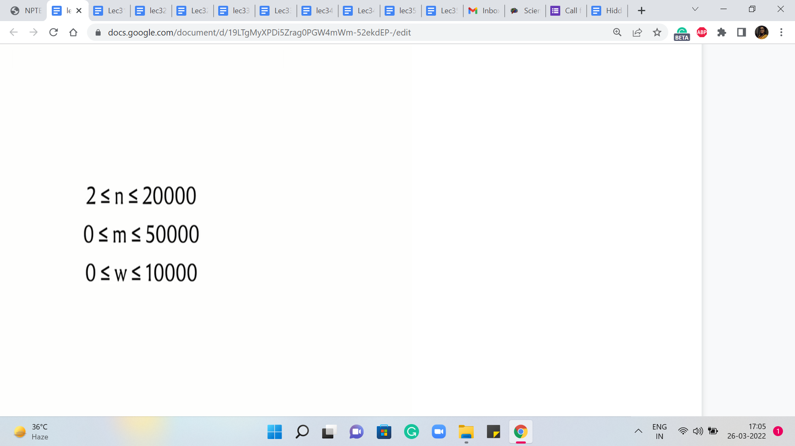
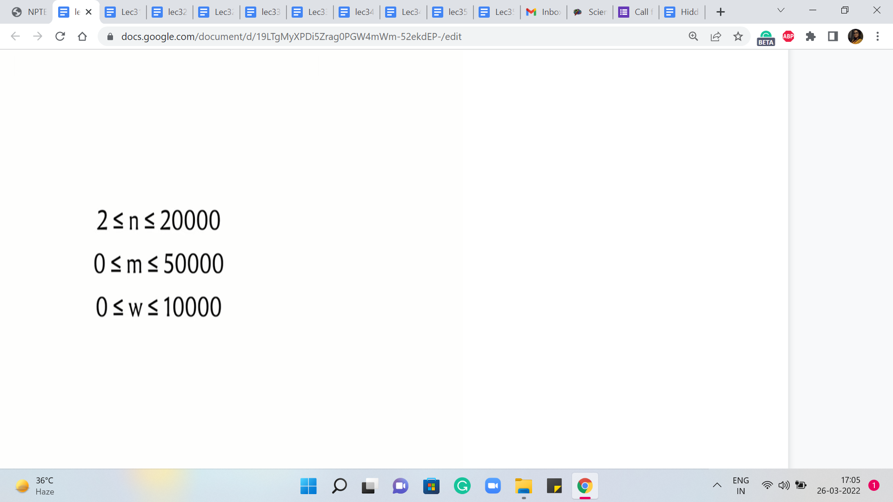

M 1 (Dijkstra’s Algorithm-Sending Email)
Lecture - 31
Shortest Paths - Module 1 (Dijkstra’s Algorithm-Sending Email)
(Refer Slide Time: 00:11)

Alright, welcome back to the third segment of the first module in week six where we are talking about the ‘shortest paths’ problem. And in particular, we have been focused on the single-source shortest path problem. And so far in the first two segments, we have discussed the case when all the edge weights are uniform or the edge weights are one.
That is essentially the same as working with an unweighted graph. And here we said that the BFS algorithm, which we saw in fact last week, will do the job for you. And then, in the previous segment, we tackled this more general case when you could have arbitrary edge weights but they are all guaranteed to be non-negative.
(Refer Slide Time: 00:55)

And in this case, we said that we could use Dijkstra’s algorithm to solve the problem. And we made a small note about the implementation, where we said that, well, it is natural for the functioning of Dijkstra’s algorithm to use a priority queue to keep track of the values of the distances. But unfortunately, the C++ implementation of ‘priority queue’ does not give you access to a method that can modify the values that have already been entered into the priority queue.
So we said that we will, you know, basically simulate the change in key-value operation by simply deleting the value and replacing it with the new value and this is also a bit tricky to do directly within a priority queue. So we are going to be using the set data structure to do this instead.
And this works also I believe in Java. But in Python, well, we do not really have an implementation of set that is internally based on balanced BSTs, which is what C++ uses to give you data structure that can maintain a sorted collection with insertion removal, lookups, or searches costing you only logarithmic time.
(Refer Slide Time: 02:19)

So if you are a Python user then, well, you could experiment with using the built-in priority queue data structure. And if you look at the documentation for heaps in Python, you will see that there is some guidance on how to update key values but the idea seems to be very similar to what we have already discussed in the sense that whenever they want to update a particular key value, they would essentially mark it as being removed and they would insert the new value for that key.
And then throughout your implementation, you have to just remember to check for whether an element has been marked as removed or not to be sure about whether it is a real element in the priority queue or not. So you could experiment with this, or you could just wait till the next segment where we talk about modified Dijkstra’s algorithm, where you could actually directly use a priority queue and it will not be a problem because we will never really have to actually decrease the key value.
We can do all of our work by simply inserting new values, and everything else will take care of itself. So you could wait till we discuss that. The only caveat is that in general, the modified version has a slightly worse complexity, especially in the worst case. But in practice, it tends to work out just fine.
So if you are a Python user then you could do one of two things. Either just stick to using the modified version where you will never have to do key updates. Or, you could use the original version and you could try and see if you can simulate updates with deletions using the method that has been described in the documentation.
At the time of this recording, the official repository only has the C++ version for the original Dijkstra’s algorithm. But I am optimistic that we might see some community contributions going forward. And if you just wait for a while, perhaps you will be able to also look at Python variants, which work just as well.
(Refer Slide Time: 04:24 & 05:17)

So with all that said, let us move on to a discussion of our first problem this week, which will give us a backdrop in which we can implement and test Dijkstra’s algorithm. So this problem is called ‘Sending Email.’ It is on the UVA platform and the problem statement basically goes like this. We are given that there are ‘n’ SMTP servers connected by network cables.
This already screams for a graph formulation. So it seems like our servers should be vertices, and the cables should probably be edges. Indeed, each of the ‘m’ cables connects to computers and it has a certain latency measured in milliseconds, which is required to send an email message, presumably between the two servers that are connected by that cable.
So by now, we are even more confident that this looks like it is something that should be modeled using a graph. What is not clear at this stage is whether there should be a directed or an undirected graph. So we will get to that in a bit. But for now, let is go ahead and look at the task at hand. So the question is the following.
What is the shortest time required to send a message from a server S to a server T along a sequence of cables? We are also told that we can assume that there is no delay incurred at the servers, which is to say that when an email arrives at a server, it can be instantly relayed to any other server that is directly connected to it via a cable.
(Refer Slide Time: 05:59 & 06:03)
 

So from this description, I think it is fairly transparent that what we are looking for is a minimum weight path between S and T. And everything that we have learned so far with regards to Dijkstra’s algorithm for instance should be applicable here.
We could think of these latencies as the edge weights. And if you take a quick look at the constraints, the number of edges and the number of vertices are in the 10,000s. The edge weights, also range from zero to 10,000, and in particular, this means that we do not have any negative weights to worry about. So in terms of correctness, we are definitely in the clear.
We could apply the original version of Dijkstra’s algorithm, the one that we have discussed so far, and be assured that that is the safe thing to do. It will produce the right answer in such instances.
(Refer Slide Time: 06:46)

But now, we also have to think about the complexity and for this, we have to understand the worst-case running time of Dijkstra’s algorithm. To do that, let is go back and look at what Dijkstra’s algorithm is actually doing. The two operations that have been highlighted here in the pseudocode are operations whose complexities will depend on the choice of the underlying data structure.
As we have discussed, if you were to use a heap or a priority queue, it is possible to implement both of these operations with a cost that is in the worst-case logarithmic in the size of the collection. But because the C++ STL does not provide a decreased key interface to its priority queue implementation, we said that we could also implement these operations using a set, in which case you get a similar guarantee.
So the worst-case complexity of running each of the ExtractMin and DecreaseKey operations can be assumed to be logarithmic in the size of the collection. Because the size of the connection is never more than the number of vertices, we see that these operations have a cost of order log n. So the only question that remains is how many times are these operations executed. Note that every vertex is extracted at most once.
In particular, if a vertex is reachable from the source, then it is extracted exactly once. And if it is not reachable from the source, then it is not extracted at all. Similarly, every edge is relaxed at most once. Every edge is considered for relaxation exactly once. But depending on how the numbers are, it may or may not actually be up for relaxation. But if it does get relaxed, that is when the DecreaseKey operation is invoked. And this happens at most once for every edge.
So if you just look at the algorithm in an overall way, you will see that the total complexity is m + n * log n because that is the product of the number of times that the operations are involved, and the cost of the operations themselves. Since m dominates n asymptotically, this can be simplified to just saying, order m log n. So if you go back and look at the constraints again because m and n are both in the order of 10,000, so you will see that this complexity breaks out just fine for this problem.
The one bit of detail that remains to be understood is if the edges that have been given to us are directed or not. Oddly enough, this is not specified in the problem statement, but if you carefully read the section where there is a description of how the input is given to us, you will notice this phrase which says that ‘the servers are connected by bidirectional cables.’
So from this, we realize that the edges are, in fact, undirected. And although all of our discussion about Dijkstra’s algorithm has been in the context of directed graphs, it turns out that when you do not have negative edge weights to worry about everything works exactly the same way. You just have to be careful when you take in your input to make sure that you record all of the edges as bidirectional or undirected edges.
(Refer Slide Time: 09:51)

Now, as is our tradition before we solve the problem, let us just work through an example. And here is an example from the sample input-output for this problem. The way it is formatted, there are multiple test cases one after the other. So I think I have picked the second one here, and the way the test cases are formatted, the first line gives you four numbers representing the number of vertices, the number of edges, and the IDs of the vertices S and T.
The vertices are labeled from zero through n-1. And here you can see that there are three vertices, three edges, and you want the distance between the first and the last vertex, the vertex that have IDs zero and two. The next m lines – in this case, of course, there are three edges so there are three lines – the next m lines give you the pairs of vertices corresponding to the ‘m’ edges.
And the last number gives you the weight of that edge and in this case, it is the latency across that cable. So, if you were to draw a picture corresponding to this graph, this is what it would look like, and you are trying to find the distance between zero and two.
Notice that the direct edge between zero and two has a cost of 200, and the only other option that you have is to go via the server that is labeled one. The total cost of doing that is 100 + 50. It should be reasonably clear that this is the better option and the answer that you are expected to output in this case is going to be 150.
You could try and play around with a few other examples but they will be exactly the same as any genetic shortest path instance. So feel free to take a break and consider doing that. And if you would like to give this a stab yourself, by all means, this is the time to do it, because the next thing that we are going to do is actually take a look at the implementation.
So we will be working here with an adjacency list representation and our code will be in C++. If you need a reminder of how the adjacency list representation works, then you can find that in our discussions from the previous week.
(Refer Slide Time: 11:50 & 12:24)


So let us get started by leading the input in. Most of this is fairly standard stuff. But let me just note that because the edges are undirected, we want to make sure that we add V as a neighbor of U, and U as a neighbor of V. So that is why you will see that we are adding elements to two adjacency lists when we read in a single edge.
So this was just taking the input in and, you know, building up the graph. And now, let is get to the implementation of Dijkstra’s algorithm. Let us begin with the initialization. So we have this distance array, which if you remember the way we wanted to initialize that, was to say that, to begin with, we know that the distance from the source to itself is zero, and everything else is initialized to some very large numbers.
So we have this constant here, in short for infinity, which is defined to be a suitably large number. And the distance array of course is length ‘n,’ ‘n’ being the number of vertices. And the source vertex here, which is S, in this case, is the S that was given to us in the first line of the input. So we remember to set that to zero. Remember we are looking for the shortest path from S to T, or between S and T.
After this, the next thing that we want to do is make sure that these V and distance V pairs are loaded into a priority queue. But again as we have discussed, instead of the built-in priority queue, we will be working with sets. So we have initialized a set, which we will call PQ. And what we want to do now, is just insert the V and distance V pairs, into this set.
(Refer Slide Time: 13:24 & 14:08)


So that is exactly what is happening in these next two lines and remember that the way the set data structure works, it automatically sorts these pairs in the order of non-decreasing distances from S. Of course, to begin with, all this means is that as comma zero is going to be the first element and the others are all tied so, at the moment, there is going to be no special ordering on them.
But as we go along, the set will maintain its sortedness and you can always access the minimum element by trying to pull out the first element in the set and that is going to work.
So now that all the initializations are out of the way, let us get to the main body of the algorithm. Remember that this was the pseudocode that we had discussed some time ago, and now, this is what we want to translate into operational code. So the outer while loop just says: continue doing this for as long as you still have elements left in your set.
So that is just a non-emptiness check that we want to do at the outset. But inside this loop, the first thing that we want to do is extract the minimum element, which is to say we want to identify the element that is closest to the source that has the smallest value of distance. And then we want to remove this element from the set. So here are a couple of lines of code that do just that.
In the first step, we are identifying the smallest element. Remember that ‘set’ stores elements in sorted order. So in this case, this is just going to be the first element. And having identified this element and committed it to the variables D and U, D denoting the distance, and U denoting the vertex, we now want to make sure that we remove this element from the set. So that is what the ‘erase’ directive in the next line is doing for us here.
So this completes the implementation of the ExtractMin operation. And now, we want to run through all the edges that are incident to the vertex U. This is just a simple matter of going through all the vertices V in the adjacency list of U. And remember that the way we have set up the adjacency list: every vertex that is adjacent to U also comes tagged with the weight of the edge from U to V.
So here, V denotes the neighbor and W denotes the weight of the edge from U to V. So that is the for loop that we have going on here. Now, remember that for each of these edges that are going out of U, we want to consider if these edges need to be relaxed. So to implement the ‘if’ condition here, let us just recall what it means for an edge to be tense.
So an edge from U to V is tense if the method of getting to V via U is better than whatever method we have currently as given by the distance array. So in particular, if the distance of U + W, W being the weight of the edge from U to V, is smaller than the distance of V, then the edge is tense, and it needs to be relaxed. And on the other hand, if the distance of U + W is at least the distance of V then nothing needs to be done.
So that is the next ‘if’ statement here. It basically says that if this edge is not tense then you can move along, there is nothing to be done. But on the other hand, if the edge is tense, then we need to relax it, which is to say that we need to update the distance array with the new value of the distance, which is the distance of U + W. And we also need to update the priority queue pair accordingly.
And since we are doing this with a set, we had agreed that we will simulate this decrease in the key-value with a ‘deletion’ and an ‘insertion.’ So the next few lines of code do exactly that. So first of all we remove the old value V, the distance of V. We update the distance array so that it now has the new value for the distance of V. And finally, we reinsert the new V and distance of V. So that is what is going on here. And this completes the implementation of the algorithm that we had discussed.
One useful addition here is to maintain a predecessor array, which gives you information about the penultimate vertex on the shortest path. It tells you where did you come from, to get to this optimal path. If you did have an explicit predecessor array, then this would be the point where you would set the predecessor of V to being U.
(Refer Slide Time: 18:08 & 18:56)


For this problem, however, this is not really required because all you need to do is output the length of the shortest path. So let us go ahead and take a look at how we do that. This output is actually pretty straightforward. You just need to look up the value of the distance of T, which is the server that you wanted to reach.
The only thing to remember to do is to make sure that you have a check for unreachability because your output is going to be slightly different if T is completely unreachable from S, which is possible. That could happen. There is no promise that the graph is connected, to begin with, and so on. So making that distinction here is the only little detail to keep in mind.
And with that, we are pretty much done here. Let me just make a quick follow-up comment about the detail of adding predecessor information. So if you want to test out Dijkstra in a setting where you have to also print the shortest path that you have found, then you could take a look at this problem on Codeforces, which asks you to do exactly that.
I think this is a nice problem to again try out on your own based on the code that you have seen so far. But just for the sake of completeness, let me show you how you would print the path if you had maintained some sort of a predecessor array.
(Refer Slide Time: 19:15)

So here is just a bit about the output. Once again, just like before, we want to distinguish the situation where the vertex is completely unreachable. In that case, you just print, for this problem, for instance, you just want to print a minus one. But if the vertex is reachable then what you want to do is basically keep moving along the predecessor array until you reach the source.
So in particular, in this problem, we have been asked to find the shortest path between the vertices labeled 1 and n. So one is our source vertex and n is the target or the destination vertex. So let us begin by setting a current variable to the vertex n. And now, we just keep moving along the predecessors as described. And as we do that, we want to just track the variables that we encounter, through this journey through the predecessor array. So we have a separate vector called path which will let us do that.
So as long as the current variable does not achieve the value one, which is an indication that you have in fact reached the source and that is your exit criteria from this while loop, as long as that does not happen just reset the current vertex to being the predecessor of whatever the current vertex was. And remember to just store the value of the predecessor that you encounter in the path array.
So this way the path array gets populated with all the vertices that you encounter in your journey from n to 1. And now, depending on whether the order matters or not, I think for this problem perhaps the order does matter and you want the path to be from 1 to n. So because of the way you have pushed the predecessor vertices that you encountered, you are kind of going backward. So you want to remember to reverse the path array so that you can print the vertices in the order in which they appear on the path from one to n.
So that is what is happening here. So I think this is a nice and simple way of just keeping track of an actual path. And whenever you need to do that, you can see that is quite easily doable just by tracking predecessor information as you run Dijkstra’s algorithm.
So do remember to also make the modification in the code that we saw for Dijkstra’s algorithm. Whenever you relax an edge from U to V, remember to set the predecessor of V = U. As always, you can find the complete code from which these snippets are being shared in this video on the official repository, a link to which you should find in the description of this video.
So with that, we come to the implementation of the original version of Dijkstra’s algorithm. And in the final segment for this module, we will talk about how negative edges impact this algorithm, and what can we do to fix it. So that is going to be a small modification to Dijkstra’s algorithm. And I will see you in the next segment for that discussion!